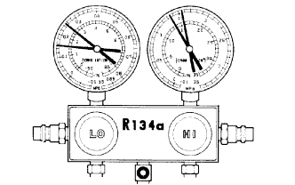

ХЛАДАГЕНТ > ПРОВЕРКА БЕЗ СНЯТИЯ С АВТОМОБИЛЯ |
| 1. ПРОВЕРЬТЕ ОБЪЕМ ХЛАДАГЕНТА |
 |
Проверьте смотровое окно на трубке системы кондиционирования.
| *1 | Смотровое окошко |
| Параметр / Устройство | Признак | Количество хладагента | Корректирующие действия |
| 1 | Пузырьки наблюдаются | Недостаточно* | (1) С помощью детектора утечек газа проверьте, нет ли утечек газа, и при необходимости устраните их. (2) Добавляйте хладагент, пока не исчезнут пузырьки. |
| 2 | Пузырьки не наблюдаются | Отсутствует, недостаточно или слишком много | См. ситуации № 3 и № 4 |
| 3 | Одинаковые температуры на впуске и выпуске компрессора | Отсутствует или почти отсутствует | (1) С помощью детектора утечек газа проверьте, нет ли утечек газа, и при необходимости устраните их. (2) Добавляйте хладагент, пока не исчезнут пузырьки. |
| 4 | Существенная разница между температурами на впуске и выпуске компрессора | Достаточно или слишком много | См. ситуации № 5 и № 6 |
| 5 | Сразу же после выключения системы кондиционирования хладагент становится прозрачным | Слишком много | (1) Слейте или выпустите хладагент (2) Удалите воздух и заправьте систему требуемым количеством очищенного хладагента |
| 6 | Сразу же после выключения системы кондиционирования хладагент вспенивается, а затем становится прозрачным | Правильно | - |
| 2. ПРОВЕРЬТЕ ДАВЛЕНИЕ ХЛАДАГЕНТА С ПОМОЩЬЮ МАНОМЕТРИЧЕСКОГО КОЛЛЕКТОРА |
В описанной ниже процедуре для выявления неисправностей применяется манометрический коллектор. Считывание показаний манометрического коллектора необходимо производить после установления следующих условий.
Условия испытания:

|  |
Нормальное функционирование системы охлаждения
| Часть системы | Объем хладагента |
| Низкого давления | 0,15–0,25 МПа (1,5 - 2,5 кгс/см2) |
| Высокого давления | 1,37–1,57 МПа (14–16 кгс/см2) |
Работа кондиционера периодически нарушается и восстанавливается вследствие присутствия влаги в системе охлаждения.
| Признаки | Возможная причина | Диагностика | Корректирующие действия |
| Во время работы со стороны низкого давления иногда возникает разрежение, после чего давление вновь нормализуется | Влага в системе охлаждения застывает в отверстии клапана компенсации расширения, вызывая временное прекращение циркуляции хладагента После таяния образовавшегося льда восстанавливается нормальное состояние. | - Осушитель находится в перенасыщенном состоянии - Влага в системе охлаждения застывает в отверстии клапана компенсации расширения и препятствует циркуляции хладагента | 1. Замените осушитель системы кондиционирования 2. Удалите влагу из контура, несколько раз откачав воздух 3. Подайте в систему требуемое количество нового хладагента |
Система кондиционирования работает неэффективно из-за недостаточного количества хладагента.
| Признаки | Возможная причина | Диагностика | Корректирующие действия |
| - Одновременное понижение давления со стороны высокого и со стороны низкого давления - Недостаточная холодопроизводительность | Утечка газа из системы охлаждения | - Недостаточное количество хладагента - Утечка хладагента | 1. Проверьте, нет ли утечек газа, и при необходимости устраните их 2. Подайте в систему требуемое количество нового хладагента 3. Если после подключения датчика давления показания давления близки к 0, найдите и устраните утечки, после чего создайте в системе вакуум |
Система кондиционирования работает неэффективно из-за плохой циркуляции хладагента.
| Признаки | Возможная причина | Диагностика | Корректирующие действия |
| - Одновременное понижение давления со стороны высокого и со стороны низкого давления - Обледенение на трубопроводе между конденсатором и установкой кондиционирования | Нарушение циркуляции хладагента в результате засорения конденсатора | Засорен конденсатор | Замените конденсатор |
Система кондиционирования не работает, либо ее работа периодически прерывается вследствие нарушения циркуляции хладагента.

| Признаки | Возможная причина | Диагностика | Корректирующие действия |
| - Вакуум со стороны низкого давления и очень низкое давление со стороны высокого давления согласно показаниям датчиков - Обледенение или запотевание трубопроводов с обеих сторон конденсатора или клапана компенсации расширения | - Нарушение циркуляции хладагента вследствие засорения или скопления влаги в системе охлаждения - Нарушение циркуляции хладагента вследствие утечки газа из клапана компенсации расширения | Нарушена циркуляция хладагента | 1. Проверьте хладагент в клапане компенсации расширения 2. Очистите клапан компенсации расширения посредством продувки воздухом 3. Замените конденсатор 4. Откачайте воздух и заправьте систему требуемым количеством нового хладагента 5. В случае утечки газа из клапана компенсации расширения замените клапан |
Система кондиционирования работает неэффективно из-за чрезмерного количества хладагента или недостаточного охлаждения конденсатора.
| Признаки | Возможная причина | Диагностика | Корректирующие действия |
| Слишком высокое давление как со стороны высокого, так и со стороны низкого давления | - Чрезмерное количество хладагента - Недостаточное охлаждение конденсатора | - Конденсатор загрязнен - Нарушена работа электродвигателя вентилятора конденсатора - Чрезмерное количество хладагента | 1. Очистите конденсатор 2. Проверьте работу электродвигателя вентилятора конденсатора. 3. Если на шагах 1 и 2 не было выявлено неисправностей, проверьте объем хладагента и добавьте необходимое количество хладагента |
Система кондиционирования не работает из-за наличия воздуха в системе охлаждения.
| Признаки | Возможная причина | Диагностика | Корректирующие действия |
| - Слишком высокое давление как со стороны высокого, так и со стороны низкого давления - Слишком горячий на ощупь трубопровод низкого давления | Попадание воздуха в систему охлаждения | - Попадание воздуха в систему охлаждения - Недостаточная вакуумная очистка | 1. Проверьте, достаточно ли компрессорного масла, и не загрязнено ли оно 2. Откачайте воздух и заправьте систему новым хладагентом |
Система кондиционирования функционирует неэффективно из-за нарушения работы клапана компенсации расширения.
| Признаки | Возможная причина | Диагностика | Корректирующие действия |
| - Слишком высокое давление как со стороны высокого, так и со стороны низкого давления - Обледенение или отпотевание трубопроводов со стороны низкого давления | Нарушена работа клапана компенсации расширения | - Чрезмерное количество хладагента в трубопроводах низкого давления - Клапан компенсации расширения открыт слишком сильно | Замените клапан компенсации расширения |
Система кондиционирования работает неэффективно из-за неисправности компрессора.
| Признаки | Возможная причина | Диагностика | Корректирующие действия |
| - Слишком высокое давление как со стороны высокого, так и со стороны низкого давления - Слишком низкое давление со стороны высокого давления | Внутренняя утечка в компрессоре | - Неисправность компрессора - Утечка из поврежденного клапана или из разрушенных поверхностей трения | Отремонтируйте или замените компрессор. |